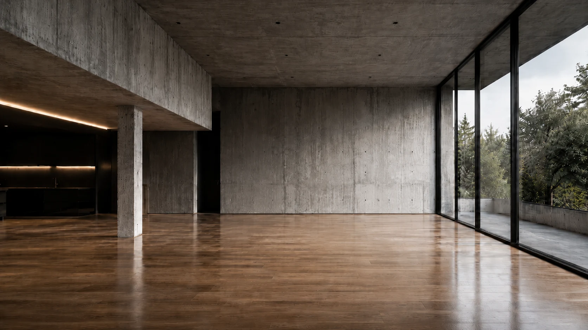
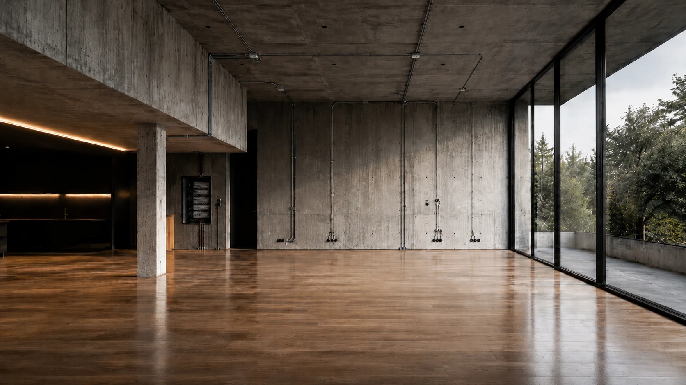
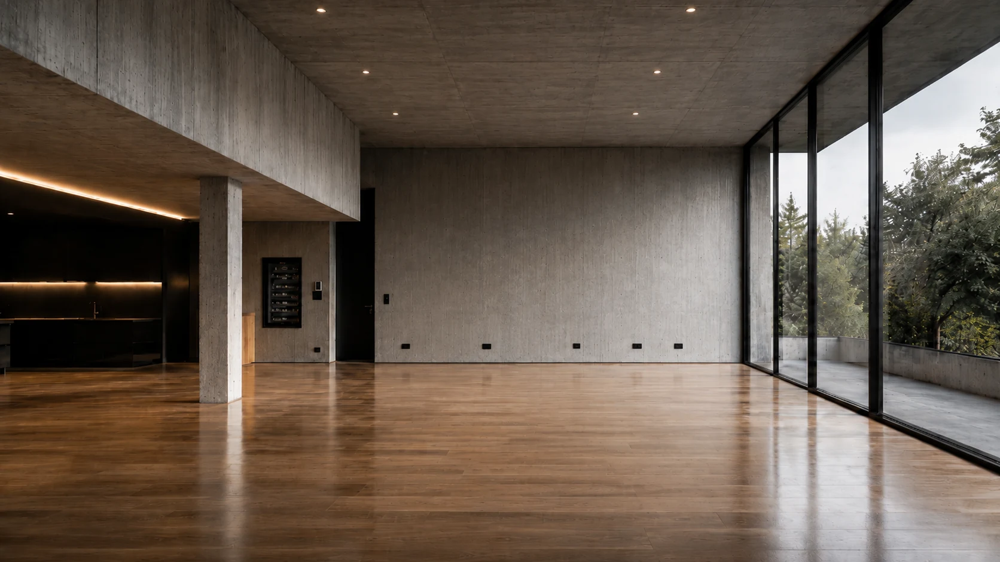
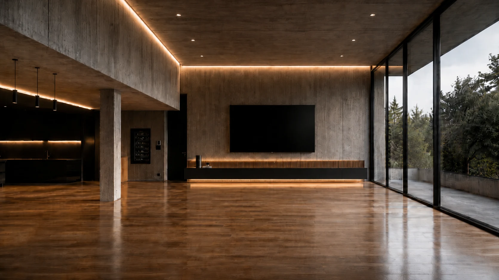
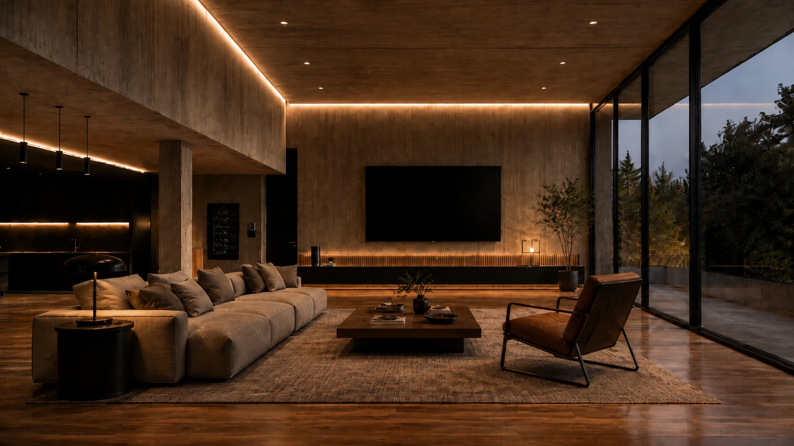
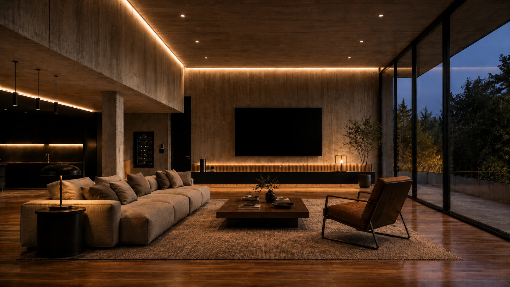

Egy kézben
Az alapszereléstől a szerelvényezésig ugyanaz a szemlélet és felelősség.






Teljes körű villanyszerelés
Új építés, teljes felújítás és precíz hibajavítás — az első horonymarástól az utolsó kapcsolóig.
Komplett elektromos kivitelezés
Horonymarás. Csövezés. Kábelezés. Szerelvényezés. Bekötés. Egyetlen átgondolt rendszerben.
Kérj helyszíni felmérést →Ismerj meg minket
Lakások és családi házak teljes elektromos kivitelezésével, felújításával és hibajavításával foglalkozunk Budapesten és környékén.
Nem csak bekötjük, amit kérsz. Átgondoljuk a terhelést, a használati szokásokat és a későbbi bővíthetőséget is. Így a rendszer nemcsak elkészül, hanem hosszú távon is jól működik.
Beszéljük át a projekted ↗Az alapszereléstől a szerelvényezésig ugyanaz a szemlélet és felelősség.
Nem csak a mai igényre, hanem a későbbi konyhára, világításra és bővítésre is tervezünk.
Logikus nyomvonalak, jelölt áramkörök és átlátható munkafázisok.
Új rendszer, teljes csere vagy egy konkrét hiba — minden feladatnál ugyanaz a cél: biztonságos és átgondolt végeredmény.
Kiállások, horonymarás, csövezés és dobozolás.
↗Vezetékek, áramkörök, biztosítéktábla és védelem.
↗Elavult hálózat bontása és korszerű rendszer kiépítése.
↗Kapcsolók, dugaljak, lámpák, LED-ek és vezérlés.
↗Zárlat, leoldás, melegedő kötés és hibás áramkör.
↗Konyhai nagygépek terhelésellenőrzése és fix bekötése.
↗Munka közben
A látható rész csak az utolsó tíz százalék. A minőség a pontos nyomvonalban, a rendezett kábelezésben és az ellenőrzött kötésekben van.
Kérj felméréstÁtláthatóan haladunk, hogy minden döntést időben lehessen meghozni.
Feladat, ingatlan és időzítés.
→Helyszín, igények és lehetőségek.
→Tiszta műszaki tartalom.
→Rendezett munkafázisok.
→Ellenőrzött, kész rendszer.
04 / AJÁNLATKÉRÉS
Egy gyors egyeztetés után megmondjuk, szükséges-e helyszíni felmérés. Nagyobb munkáknál a pontos műszaki tartalom alapján készül az ajánlat.
Ajánlatot kérek ↗Hibakeresés, készülékbekötés, szerelvénycsere és kisebb bővítés.
Meglévő hálózat felmérése, cseréje és új igények szerinti átalakítása.
Teljes alapszerelés az első kiállástól az átadásig.
05 / GOOGLE ÉRTÉKELÉSEK
A tartalom jelenleg minta; élesítés előtt valódi Google-véleményekre cserélendő.
„Minden kiállást előre átbeszéltünk, a munkaterület végig rendezett volt. Pont azt kaptuk, amit megbeszéltünk.”
„Gyorsan megtalálták a hibát, és érthetően elmondták, mi okozta. Korrekt, nyugodt és profi munka.”
„A konyha teljes elektromos kiépítése szép és átgondolt lett. Jó érzés volt látni, hogy minden részletre figyelnek.”
Elavult alumínium vezeték, rendszeres leoldás, melegedő kötések vagy kevés áramkör esetén érdemes teljes felmérést kérni.
A kiállások kijelölését, horonymarást, dobozolást, védőcsövezést, kábelezést és az elosztó előkészítését.
Igen, hibakeresést, szerelvénycserét, lámpabekötést, főzőlap- és sütőbekötést is vállalunk.
Kisebb feladatoknál sokszor elég egy pontos telefonos egyeztetés. Felújításnál és új építésnél javasolt a helyszíni felmérés.
Az ingatlan méretétől, a falazattól és a műszaki tartalomtól függ. A várható ütemezést az ajánlat előtt egyeztetjük.
Budapesten és a környező településeken vállalunk munkát; a pontos helyszínt az első egyeztetésnél tisztázzuk.
07 / KAPCSOLAT
Írd meg, milyen ingatlanról és milyen feladatról van szó. Röviden egyeztetjük a következő lépést.
A telefonszám és e-mail jelenleg mintaadat.